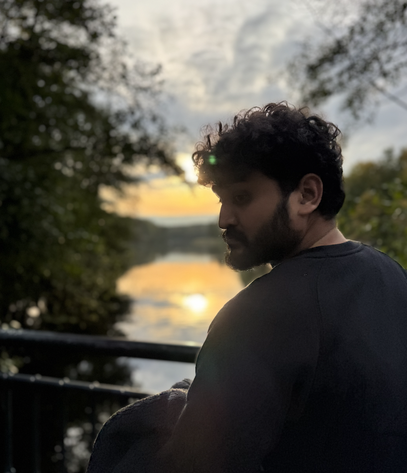
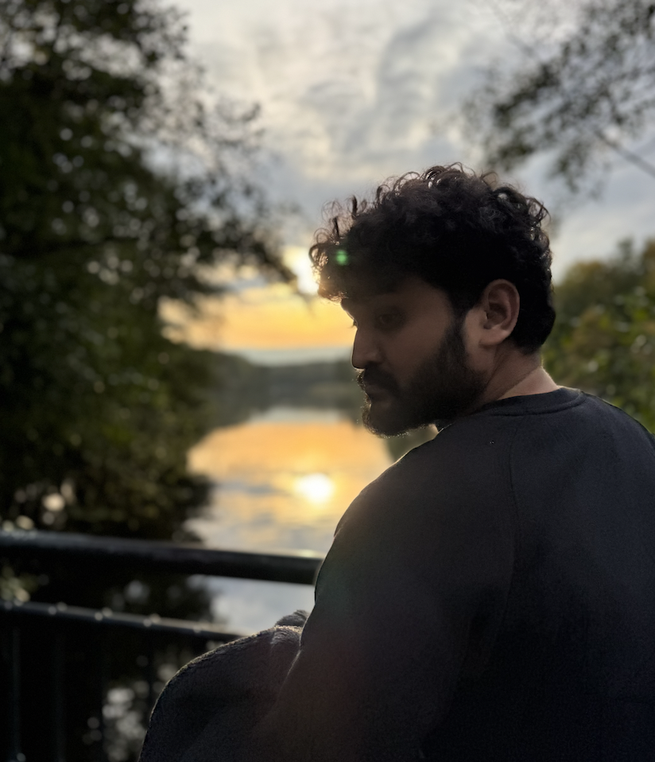

MANOJ MALVIYA
Hello! I’m Manoj Malviya, a versatile, language agnostic Software Engineer passionate
about solving complex
problems with elegant solutions and turning them
into tangible results using advanced computational tools and methodologies. Strong problem-solver with a
user-first mindset, and a track record of leading complex projects and
delivering elegant solutions.
Work Experience:
- Software Engineer at Formlabs Kft. Leading UI framework development and optimizing 3D printing workflows
- R&D Engineer at Formlabs Inc. Developed additive manufacturing algorithms to boost efficiency.
- Research Assistant at Pennsylvania State University: Conducted research in computational design and additive manufacturing.
Education:
- M.S. in Mechanical Engineering from Pennsylvania State University
- B.Tech in Mechanical Engineering from Indian Institute of Technology
Other Interests:
- Electronic music composer with a passion for blending digital soundscapes with piano influences.
- Traveler && photographer - Inspired by diverse cultures, stories from streets and landscapes
Github: Learn More about how it works.
Total Commits
0
Longest Streak